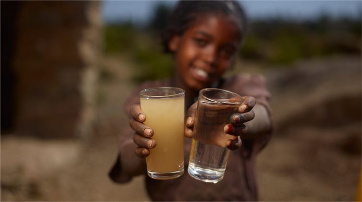

Two Glasses. One Choice They Never Had.
In rural Ethiopia and Chad, contaminated water is not the worst option it is often the only one. Children drink what they can find, and the consequences are severe and preventable.
- Diarrhoeal disease kills a child every 2 minutes
- Contaminated water spreads cholera, typhoid, and dysentery
- Safe water access could prevent 1.4 million deaths per year